|
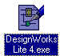
|
Starting the Program
� If it is not already running, double-click on the DesignWorks icon to start the program.
� Use the Open Design command to open the example file "FiveMin.cct" provided in the Examples directory OR create it using the instructions given in the5-Minute Schematic tutorial.
|
|
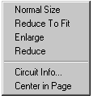
|
Navigating Around the Schematic
� Press the right mouse button (Right-click) in an empty area of the schematic (i.e. not on a device or signal line).
� In the pop-up menu that appears, select the command Reduce to Fit.
The screen display will be zoomed out to fit the entire schematic in the window. Right-clicking in the schematic displays a pop-up menu containing short-cut editing commands. Right-clicking on a device, signal, pin or attribute field will display a special menu for each type of object.
|
|
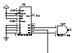
|
Navigating Around the Schematic (cont'd)
� Select the Magnify command from the View menu.
Clicking the magnifying glass tool zooms in on that part of the schematic. Some less obvious uses of this tool are:
� Clicking and dragging down and right causes the display to zoom so that the area swept over just fits in the window.
� Clicking and dragging up and to the left a small amount causes the display to zoom out one step.
� Clicking and dragging up and to the left a large amount (more than 1/2 the screen) causes the display to do a Reduce to Fit.
|
|
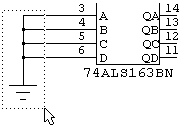
|
Deleting a Group of Objects
� Using the pointer () tool, click and drag from above and to the left of the ground symbol to below and right of it.
� Make sure that the ground symbol itself and the attached signal line are highlighted and no other items.
� Press the Delete key to remove these items.
|
|
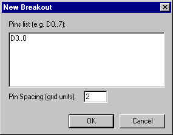
|
Creating a Bus
� Select the New Breakout command from the Options menu. In the signal list area of this dialog, enter "D3..0".
� Click on the OK button.
We used sequentially numbered signals in this case, but any collection of names can be used, for example "CLK CLR SIZ0 SIZ1". "0..3" places the highest numbered signal at the top, "3..0" places it at the bottom.
|
|
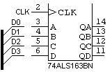
|
Creating a Bus (cont'd)
� Place the "breakout" symbol adjacent to the 163 device, as shown. Use the arrow keys or tool palette if necessary to orient the breakout symbol.
� If not done already, connect the 4 breakout pins to the inputs of the 163 device.
A "breakout" is a pseudo-device symbol that ties any collection of signal lines into a single bus line. You can extend a bus line away from either end of the "spine" of the breakout symbol.
|
|
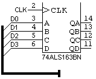
|
Creating a Bus (cont'd)
� Using the pointer () tool, click and hold exactly at the lower end of the "backbone" of the breakout symbol.
� Drag down and right from this point, then release the mouse button. This will have created a bus line as shown.
� Right-click on the bus line. In the pop-up menu, select the Signal Info command.
When the Signal Info command is selected for a bus, a list of the internal signals is displayed.
� Click on the OK button.
|
|
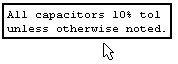
|
Adding Text Notations
� Move to an unused corner of the schematic page.
� Select the text (A) tool in the tool palette.
� Click in an open area of the schematic (i.e. not on an existing device, signal or text item). You will see a text entry rectangle.
� Enter "All capacitors 10% tol unless otherwise noted", or any other notation that suits you. Carriage returns can be used in text notations, if desired.
� Click outside the text entry rectangle to close it.
Text notations created in this fashion are stored with the circuit, but are not associated with any device or signal and will never appear in a netlist.
|
|
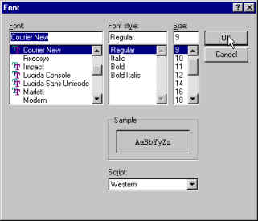
|
Adding Text Notations (cont'd)
� Right-click on the text item that was just created.
� Select the Properties option.
� Click on the Text Style button.
� Use the controls in this dialog to set any desired text style.
� Click on the OK button in both dialogs to return to the schematic.
Text style can be set individually for random text notations such as this one. Other forms of text such as attribute and pin numbers have global text style settings, but cannot be set individually. See the Design Preferences command from the Drawing menu.
|
|
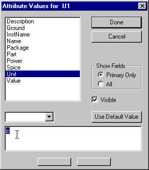
|
Device Packaging
� Right-click on one of the NAND gate devices.
� Select the Attributes commmand from the pop up menu.
텶n the attributes dialog select the "Unit" attribute.
텰hange the value of the attribute to "c" and then close the dialog.
|
|
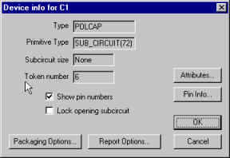
|
Device Packaging (cont'd)
� Right-click on the same device as in the previous section and select the Device Info command.
� Click on the Packaging Options button.
� Select the "Lock and check package and unit" option.
� Click on the OK button in both dialogs.
The Packager has now been instructed to keep this device name unchanged but check it for conflicts in future packaging operations.
|
|
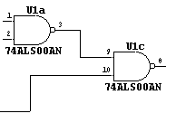
|
Device Packaging (cont'd)
� Select the "Device Naming and Packaging Options" command from the "Name and Packaging" sub-menu of the Options menu.
� Change the text in the Default name prefix box to "XX" and click on the OK button.
� Select the "Repackage Design" command from the "Name and Packaging" sub-menu of the Options menu.
� Click on the OK button in the confirmation dialog.
Notice that new names have now been assigned to all devices except the one that we marked as "Lock and Check" and any others that will fit into the same package. Names are assigned starting in the "A1" grid of the schematic, working toward the opposite corner.
|
You may wish to use the Save As command from the File menu to save the completed example at this point.